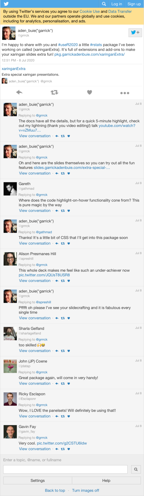
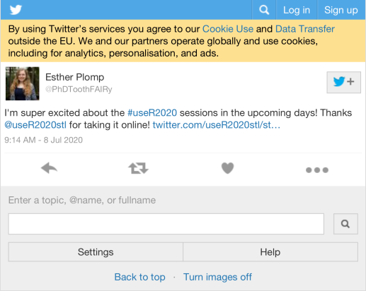

useR 2020
The R user conference 2020 (online due to COVID-19)
2020-07-13 08:41:52
Parameters
| Parameter | Value |
|---|---|
| hashtag | #user2020 |
| start_day | 2020-07-08 |
| end_day | 2020-07-11 |
| timezone | Etc/UTC |
| theme | theme_light |
| accent | #2165b5 |
| accent2 | #90B2DA |
| kcore | 2 |
| topics_k | 6 |
| bigram_filter | 3 |
| fixed | TRUE |
| seed | 1 |
1 Introduction
An analysis of tweets from the #user2020 hashtag. A total of 2554 tweets from 1021 users were collected using the rtweet R package.
2 Timeline
2.1 Tweets by day

2.2 Tweets by day and time
Filtered for dates 2020-07-08 - 2020-07-11 in the Etc/UTC timezone.
3 Users
3.1 Top tweeters
Overall

Original

Retweets

3.2 Retweet proportion

3.3 Top tweeters timeline

3.4 Top tweeters by day
Overall
Day 1

Day 2

Day 3

Day 4

Original
Day 1

Day 2

Day 3

Day 4

Retweets
Day 1

Day 2

Day 3

Day 4

4 Sources

5 Networks
5.1 Replies
The “replies network”, composed from users who reply directly to one another, coloured by PageRank.

5.2 Mentions
The “mentions network”, where users mention other users in their tweets. Filtered for a k-core of 2. Node colour and size adjusted according to PageRank score.

6 Tweet types
6.1 Retweets
Proportion

Count

Top 10
| screen_name | text | retweet_count |
|---|---|---|
| grrrck |
I’m happy to share with you and #useR2020 a little #rstats package I’ve been working on called {xaringanExtra}. It’s full of extensions and add-ons to make your xaringan slides extra fun! https://t.co/cflHqoUija |
148 |
| useR2020stl | Today is the day! All talks for #user2020 are available to stream live on our YouTube channel: https://t.co/SKAnS0JVxe | 89 |
| annakrystalli |
Was honoured to give my first keynote at #useR2020 yesterday on “Computational Reproducibility: from theory to practice†Catch up here: 📺 https://t.co/9cLkwkj97I Slides: https://t.co/WhOOBRqKhm Now time to kick back and binge on on all the great #rstats content created! 😎🍿 https://t.co/gNeskXRV0c |
77 |
| lacion |
🌈“Communities of Practice in Latin America: #rstats & Friends†for #useR2020 is now available at 🔗https://t.co/NfT1kbITBH🉠Emotional as I tweet because it features 35 authors from 🇦🇷🇦🇺🇧🇴🇧🇷🇨🇱🇨🇷🇪🇨🇲🇽🇵🇪🇺🇸🇺🇾! Brilliantly co-organized by @yabellini @PaobCorrales @palolili23 &💁🏽‍♀️💜 |
52 |
| ledell |
I’m very honored & excited to be a keynote speaker at @useR2020stl! My talk tomorrow is, “Responsible Automation: Towards Interpretable & Fair #AutoML”. ⚖️ ğŸ“… Fri, July 10 @ 9:00 PDT / 12:00 EDT / 16:00 UTC 📺 https://t.co/vfPIGc0XvV #useR2020 |
49 |
| useR2020stl | Details about all of our #useR2020 #rstats tutorials can be found on our website - https://t.co/yKyjZKjq9r https://t.co/xuL59MSjKF | 48 |
| thomas_mock |
So excited to be sharing what the community has built around #TidyTuesday for #useR2020 ! “TidyTuesday: Scaffolding for a Community of Practice†Slides: https://t.co/PAs1uruopZ #rstats |
43 |
| AmeliaMN | If you missed my #useR2020 keynote, Speaking R, it is available on YouTube at https://t.co/sGbOwiEoLQ and slides are hosted at https://t.co/xm0phg7ln9 https://t.co/lu7HIpUqhW | 41 |
| StatnMap | Registration for our remote #useR2020 #rspatial tutorial ‘First steps in spatial data handling and visualization’ will open tomorrow 2:00pm UTC (written 5:00 EAT). In collab. with @Dorris_Scott & @jakub_nowosad 🌠Places are limited… 👉 More info: https://t.co/tqQ8yVswBL https://t.co/0ApaesuBZ6 | 34 |
| useR2020muc |
Interested in the work of R core? Tomorrow is your chance to learn about it in the R core keynotes and panel discussion. #rstats #useR2020 https://t.co/ISTxC3A6Bg |
34 |
Most retweeted

6.2 Likes
Proportion

Count

Top 10
| screen_name | text | favorite_count |
|---|---|---|
| grrrck |
I’m happy to share with you and #useR2020 a little #rstats package I’ve been working on called {xaringanExtra}. It’s full of extensions and add-ons to make your xaringan slides extra fun! https://t.co/cflHqoUija |
563 |
| annakrystalli |
Was honoured to give my first keynote at #useR2020 yesterday on “Computational Reproducibility: from theory to practice†Catch up here: 📺 https://t.co/9cLkwkj97I Slides: https://t.co/WhOOBRqKhm Now time to kick back and binge on on all the great #rstats content created! 😎🍿 https://t.co/gNeskXRV0c |
270 |
| useR2020stl | Today is the day! All talks for #user2020 are available to stream live on our YouTube channel: https://t.co/SKAnS0JVxe | 196 |
| AmeliaMN | If you missed my #useR2020 keynote, Speaking R, it is available on YouTube at https://t.co/sGbOwiEoLQ and slides are hosted at https://t.co/xm0phg7ln9 https://t.co/lu7HIpUqhW | 164 |
| ledell |
I’m very honored & excited to be a keynote speaker at @useR2020stl! My talk tomorrow is, “Responsible Automation: Towards Interpretable & Fair #AutoML”. ⚖️ ğŸ“… Fri, July 10 @ 9:00 PDT / 12:00 EDT / 16:00 UTC 📺 https://t.co/vfPIGc0XvV #useR2020 |
154 |
| thomas_mock |
So excited to be sharing what the community has built around #TidyTuesday for #useR2020 ! “TidyTuesday: Scaffolding for a Community of Practice†Slides: https://t.co/PAs1uruopZ #rstats |
136 |
| useR2020stl | Details about all of our #useR2020 #rstats tutorials can be found on our website - https://t.co/yKyjZKjq9r https://t.co/xuL59MSjKF | 131 |
| thomas_mock |
Loved @grrrck ’s presentation on {xaringanExtra} for #user2020 !
So much packed into 5 min!!! https://t.co/s22fIC7Yot |
111 |
| HeidiBaya |
I moved to the living room for optimal internet connection to live stream #useR2020 So excited and nervous! https://t.co/lu9G8BOMl5 |
110 |
| useR2020muc |
Interested in the work of R core? Tomorrow is your chance to learn about it in the R core keynotes and panel discussion. #rstats #useR2020 https://t.co/ISTxC3A6Bg |
96 |
Most likes

6.3 Quotes
Proportion

Count

Top 10
| screen_name | text | quote_count |
|---|---|---|
| PhDToothFAIRy | I’m super excited about the #useR2020 sessions in the upcoming days! Thanks @useR2020stl for taking it online! https://t.co/mQQbl46oCT | 6 |
| natorro | Comienza ya #useR2020 la conferencia más importante de R y sus usos del mundo. Estén atentos, este año es online :-D https://t.co/f6FhGlWtGN | 6 |
| rweekly_org | Plan for #useR2020 https://t.co/JnJEX0dUZK | 6 |
| RLadiesEskisehR | 👩‍💻 useR 2020 konferans programı için tıklayın : 👇 Sunumlar yarın başlıyor ayrıca Youtube üzerinden izlenebilecek 😉 #RStats #useR2020 https://t.co/te7Q2W0Q0v | 6 |
| rnzbrk | useR konferansı bu sene hem ücretsiz hem de online olacak. Kaçırmayın derim! #rstats #user2020 https://t.co/Ijuy50NEIx | 6 |
| useR2020stl | Remember to make some space in your calendar next week for #useR2020’s live events organized together with @useR2020muc! We’ve got a great lineup, and you can watch all of this #rstats goodness via YouTube (links are forthcoming). https://t.co/FlcQMhE2NS | 6 |
| miljenka_vuko | That feeling when all the hard work starts to take shape 🤩 Although it sucks that it couldn’t happen in person, this way - EVERYONE can join! #rstats-ists, join us for the #user2020 fiesta during July! https://t.co/ZnretCXp8w https://t.co/Ky5m25SOVo | 4 |
| natydemi | #useR2020 Agenda: https://t.co/bZFEZhA9CY ♡ https://t.co/hAc9QBAMzN | 4 |
| RLadiesBH | O evento esse ano será gratuito e online #useR2020 https://t.co/54LXzPibAk | 4 |
| RLadiesCba | Esta edición de #useR2020 será gratuita y online No es necesaria inscripción Las charlas van a estar disponible con subtitulos en Youtube #RStats #rstats https://t.co/S4rDaxVi8g | 4 |
Most quoted

7 Media
Proportion

Top 10
| screen_name | text | favorite_count |
|---|---|---|
| annakrystalli |
Was honoured to give my first keynote at #useR2020 yesterday on “Computational Reproducibility: from theory to practice†Catch up here: 📺 https://t.co/9cLkwkj97I Slides: https://t.co/WhOOBRqKhm Now time to kick back and binge on on all the great #rstats content created! 😎🍿 https://t.co/gNeskXRV0c |
270 |
| AmeliaMN | If you missed my #useR2020 keynote, Speaking R, it is available on YouTube at https://t.co/sGbOwiEoLQ and slides are hosted at https://t.co/xm0phg7ln9 https://t.co/lu7HIpUqhW | 164 |
| useR2020stl | Details about all of our #useR2020 #rstats tutorials can be found on our website - https://t.co/yKyjZKjq9r https://t.co/xuL59MSjKF | 131 |
| HeidiBaya |
I moved to the living room for optimal internet connection to live stream #useR2020 So excited and nervous! https://t.co/lu9G8BOMl5 |
110 |
| StatnMap | Registration for our remote #useR2020 #rspatial tutorial ‘First steps in spatial data handling and visualization’ will open tomorrow 2:00pm UTC (written 5:00 EAT). In collab. with @Dorris_Scott & @jakub_nowosad 🌠Places are limited… 👉 More info: https://t.co/tqQ8yVswBL https://t.co/0ApaesuBZ6 | 80 |
| useR2020stl | “code is language†- @AmeliaMN #useR2020 #rstats https://t.co/QhgyIfR0kJ | 78 |
| kara_woo | It’s a bummer to not be able to attend an in-person #useR2020, but there are some benefits to watching from home. https://t.co/YmTkRW5U43 | 72 |
| mattdray | 🗣️Inspired by @AmeliaMN‘s @RConsortium #user2020 talk, I started the {r2eng} package (WIP!) to make #rstats code speakable. So ’variable <- 1’ is converted/spoken as ‘variable gets 1’. Does this already exist? 🐙GitHub: https://t.co/Arlr6Z6wGB 🎥Video demo below (sound on) https://t.co/91WJGzypYc | 65 |
| romain_francois | The #useR2020 venue is pretty cool https://t.co/RE6xR0bLjP | 55 |
| useR2020muc |
To make it easier for you to know about times and dates of the #useR2020 live events, we’ve integrated a calendar on our website which should show events in your time zone. https://t.co/P6mqHNVupn https://t.co/ZPORL5c6nk |
46 |
7.1 Most liked image

8 Tweet text
8.1 Word cloud
The top 100 words used 3 or more times.

8.2 Bigram graph
Words that were tweeted next to each other at least 3 times.

8.3 Topic modelling
Top 10 words associated with 6 topics identified by LDA.

8.3.1 Representative tweets
Most representative tweets for each topic
Topic 1
| screen_name | text | gamma |
|---|---|---|
| yabellini | @SSanchezColon @_lacion_ @R4DScommunity @PaobCorrales @palolili23 Porque #useR2020 es en Inglés. Conf de R en Español: @conecta_R Conf de R en Español, Portugués (que también habla LatAm) e Inglés @LatinR_Conf .Ambas hechas por y para la comunidad. La segunda totalmente voluntaria. Los subtÃtulos también estarán en Español (hechos x nosotros) | 0.9967863 |
| datalatam |
Hoi @fransvandunne habló sobre @datalatam durante la conferencia #User2020 El link arranca con Data Latam, pero vale la pena ver toda la charla para tener una idea de la cantidad y calidad de iniciativas con las que contamos en Latinoamerica! |
0.9966133 |
| ixpantia |
Para nosotros en @ixpantia nos alegra ver dos iniciativas mencionadas en esta charla durante #useR2020 que hemos apoyado desde que arrancaron: @datalatam y @conecta_R. ¡Vamos a seguir apoyándolos para fomentar el crecimiento de la comunidad de ciencia de datos en la región! https://t.co/ID4LTRSQDU |
0.9965196 |
| suziinao | Mein #Account zeigt als Anzahl der #Tweets 8446,- das sind 5000+ in 6 Monaten, in denen ich selten getweetet habe. Bei 180 Tagen, wenn ich 10 Tweets täglich gepostet HÄTTE - was ich nicht habe - wären das 1800!#lka #fyi #accountability #notmyfault #user2020 #hack #Paymeforusingme https://t.co/HSCeQ0jbni | 0.9964206 |
| yabellini | Siguiendo la charla de @AmeliaMN en #user2020 “Hablando R†y espectante a ver si nombra materiales interesantes a la pregunta sobre ¿cómo es para no hablantes de Inglés aprender un lenguaje de programación basado en Inglés? (yo aprendà inglés gracias a la programación 😉💻😱ğŸ˜) https://t.co/0mKYqubhE0 | 0.9964206 |
| yabellini | Un blog post que resume las iniciativas que se llevan adelante en Latinoamérica para desarrollar la comunidad en nuestra región. Este post es un resumen de nuestro panel “Comunidades de práctica en América Latina: R y amigues†en #useR2020 1/2 https://t.co/MKFtXAcZu0 | 0.9962047 |
| yabellini | En #useR2020 @noamross está mencionando el panel de comunidades de LatAm que coordinamos con @_lacion_ @palolili23 y @PaobCorrales y en el cual trabajaron 35 autores representando a mucha gente genial de #LatAm de la comunidad #RStats 😀💻 Miralo acá 👉 https://t.co/WQNbToUZJ3 https://t.co/YYI7ky9Ehp | 0.9960866 |
| metadocencia |
✨Parte de nuestro equipo también lidera iniciativas nacionales, regionales e internacionales relacionadas al lenguaje de programación R, #rstatses Este video incluye nuestra 1ra aparición (breve) en #useR2020, una conferencia internacional🉠¡Felicitaciones! ¡Por muchas más!ğŸ‘🼠https://t.co/WzJWoRCR1G |
0.9960866 |
| espaciomuestral | #FelizJueves Si te interesa conocer o ampliar tus conocimientos en el lenguaje de programación de R, te recomendamos la conferencia virtual mundial de R @useR2020stl que se llevará a cabo del 8 al 11 de julio. #useR2020 📌https://t.co/NkON7RExkV https://t.co/q9rHRhEUXi | 0.9958270 |
| R_Forwards |
All #useR2020 contributed videos have been captioned. To submit translations or corrections (“translation†from published version to another English version):
|
0.9953659 |
Topic 2
| screen_name | text | gamma |
|---|---|---|
| keireton |
Does anyone have any bright ideas for generating smooth, normalized heatmaps in R, from raw data of paired x, y coordinates? Here’s my hack approach: ggplot (x, y) + geom_bin2d (bins = #) + scale_fill_gradientn (7 colors from dark blue to red) #rstats #rstudio #useR2020 https://t.co/n3iUVbscCG |
0.9943199 |
| useR2020stl |
This past semester gave @AmeliaMN the chance to create an experiment, with one intro course using tidyverse syntax and the other using formula syntax. One example - bootstrapping. Have questions about Amelia’s talk? Ask via Slido - https://t.co/NfeWIjH6HX #rstats #useR2020 https://t.co/W4RTN0EwmQ |
0.9930682 |
| HeathrTurnr | The #useR2020 R-core panel (https://t.co/8J1ikWTT1Q) raised several issues: - barriers to inclusion - what R core might do to encourage new contributors - how to make CRAN submission less scary I addressed all this + more in my talk at celebRation 2020 https://t.co/nKkNMgGatx | 0.9926640 |
| R_Forwards |
All #useR2020 live events are live-captioned by @whitecoatcapxg. We hope this makes the events more accessible. If you prefer, you can follow the captions here: https://t.co/Yp5DetGJX6 Next event in a couple of minutes! https://t.co/cxTIvC2wmH |
0.9926640 |
| R_Forwards | Succession and diversity were key topics in the #useR2020 R Core panel (https://t.co/e9mDWYqvAb). We are putting a team together with @lawremi to work on initiatives that will encourage new contributors, with a focus on inclusion. Do get in touch if you’d like to be involved! | 0.9926640 |
| rocio_joo | I watch talks in #useR2020 to learn more about #Rstats and better practices in science, but then I listened to this talk and I also learned how to be a better human being. Thanks, @ledell I was saying “yes”, “amen†and clapping the whole time. People, watch it. https://t.co/yeTrA4pkl4 | 0.9922098 |
| chrisprener | Today is bittersweet - I’m so grateful for our #StLouis organizing team who worked for nearly a year before we had to pause our #useR2020 planning and ultimately cancel the in-person event due to COVID. Thanks to each and every one of you for your dedication to the conference! https://t.co/eas0NE3xo7 | 0.9922098 |
| useR2020stl | Remember to make some space in your calendar next week for #useR2020’s live events organized together with @useR2020muc! We’ve got a great lineup, and you can watch all of this #rstats goodness via YouTube (links are forthcoming). https://t.co/FlcQMhE2NS | 0.9916956 |
| kara_woo | Global condition handlers (new in R 4.0.0 thanks to @LukeTierney4 & @_lionelhenry) allow you to: ✅ turn some warnings into errors ✅ capture some errors and present additional info ✅ ignore some warnings or messages #user2020 | 0.9911088 |
| useR2021zrh | Follow @useR2021global for updates on the global virtual useR! 2021 - The Zurich team is excited to host this conference together with a global team! #rstats #useR2021 #useR2020 | 0.9911088 |
Topic 3
| screen_name | text | gamma |
|---|---|---|
| yake_84 |
Wish I could hand out my new #rstats stickers at #useR2020 {simplecolors} Hex codes/palettes via sc(“brightblue4”, “dullred2”) etc https://t.co/x69mx3oQwO {shinyobjects} Access reactive #rshiny objects while coding. No need to run app to see changes https://t.co/0LKdI5Cx8A https://t.co/YxNI7Pp7Qc |
0.9940514 |
| chrisprener | The Beatles’ cover of the Buck Owens song “Act Naturally†is hitting the spot this busy morning - run, write, and then play air traffic controller for a #useR2020 keynote. https://t.co/ufc1EhpnC1 #riseandgrind | 0.9937562 |
| gdequeiroz |
ICYMI: Last month we released AIF360 in R to help detect and mitigate bias in ML Models 📌 CRAN: https://t.co/riiMMUTafj 📌Resources: https://t.co/lUB2RTSr4d 🌻Feedback, issues, contributions: https://t.co/q9t2gzJOyP 📚Blogpost: https://t.co/7CIfjhMXgA #rstats #useR2020 |
0.9937562 |
| nickseewald |
Listening to @AmeliaMN’s on speaking R at #useR2020 has made me realize that so much of how I code is me talking to myself in English in my head and then having my hands translate. I feel like I just left a therapy session! (Also love to see a niche 30 Rock gif included) https://t.co/2vIY2XKFti |
0.9937562 |
| useR2020stl | Great connection between @AmeliaMN’s talk and @noamross’s talk this morning - both highlighted the way in which English is the normative language for programming in #rstats and how this is a barrier to accessibility. Join us here - https://t.co/NfeWIjH6HX #useR2020 #rstats https://t.co/gvxkNkRy36 https://t.co/zOrjmWKcWg | 0.9934301 |
| EmilyRiederer |
Pleased to share my #UseR2020 lightning talk on {projmgr}. Take 5 minutes to see if this pkg can help you save hours in project management overhead Plus, check out other videos and live talks / tutorials throughout the month thanks to @useR2020stl ! |
0.9934301 |
| useR2020stl |
“This talk is all about responsibility†- @ledell is now speaking! She’s introducing AutoML first, and describing the possibilities of negative effects from using auto #MachineLearning. You can find the materials for Erin’s talk here - https://t.co/OvKttceX89 #useR2020 #rstats https://t.co/h83NcEgXuI https://t.co/ViPuGiVK80 |
0.9930682 |
| RLadiesSantiago |
The first @useR2020stl online tutorial is coming next Tuesday (July 14th) at 15:00 UTC! 🉠Join us for @eddelbuettel tutorial: “Seamless R and C++ Integration with Rcpp†▶ï¸https://t.co/nfN1V7Aaqa More about useR!2020 tutorials: https://t.co/KyjPK9sfhl #rstats #useR2020 |
0.9926640 |
| useR2020stl | “you need something to iterate over these aspects†of models if you want to break through models’ “black boxes†- @smarterpoland giving the rationale for the interactive visualizations he’s going to share to explore #rstats #MachineLearning outputs. #useR2020 https://t.co/MfwTlkNQzn | 0.9926640 |
| huttoncp | Great #useR2020 talk by @ledell on two of the most important issues in #DataScience: interpretability & fairness in #MachineLearning: https://t.co/ZAlugTkqwU …with respect to interpretability, I’m also a huge fan of partial dependence plots for classification models. | 0.9922098 |
Topic 4
| screen_name | text | gamma |
|---|---|---|
| ideee5 | 今リアルタイムでやってるuseR!のTalk with your modelã®ãƒˆãƒ¼ã‚¯ã€è§£é‡ˆæ€§ã®èª¬æ˜ãŒæ˜å¿«ã§ã„ã„内容ã ã£ãŸ. Briliant! #useR2020 https://t.co/HoBlUvfwm4 | 0.9951887 |
| taranago | 時系列データを補完するimputeTSパッケージのデモ。 CRANにあるものは旧版なので、githubからインストールする。install_github(“SteffenMoritz/imputeTS”) https://t.co/8Th1iFKw92 #useR2020 | 0.9949974 |
| techg_row | Instagram Knowledge..🤔🤔 #Instagram #instagramfacts #TwitterOfTime #techfacts #technologynews #Google #Chrome #user2020 #tech #WhatDoYouThink #tech #knowledgemanagement #Tech4All #GoogleDoodle #knowledge #newupdates #upcomings #technology FOLLOW FOR MORE DAILY TECH NEWS…👆 https://t.co/i9JPYMZNl4 | 0.9947903 |
| mattdray | 🗣️Inspired by @AmeliaMN‘s @RConsortium #user2020 talk, I started the {r2eng} package (WIP!) to make #rstats code speakable. So ’variable <- 1’ is converted/spoken as ‘variable gets 1’. Does this already exist? 🐙GitHub: https://t.co/Arlr6Z6wGB 🎥Video demo below (sound on) https://t.co/91WJGzypYc | 0.9943199 |
| groundwalkergmb | My #user2020 talk about {rtables} for generating complex, multi-level tabulations for display/reporting tables is up. Pkg is fully general/data agnostic but think report tables submitted to FDA/EMA. #rstats not historically used for that, but it will be. https://t.co/Xt1ESs6hQA | 0.9940514 |
| kaija_bean | Really enjoying @AmeliaMN’s #rstats talk at the virtual #useR2020 conference on “Speaking R”. Watch here: https://t.co/TtmPWBXuZy. Learning code is like learning language, and we can learn a lot from language teaching when we teach code. | 0.9934301 |
| big_bad_sam |
Checkout @andyteucher’s awesome #useR2020 talk on the bcdata📦: https://t.co/fxFgNij95H Also a great time to mention that a new version of bcdata recently hit cran. Changes include: works better. Docs here: https://t.co/deFE68Gt2h @Data_BC @stephhazlitt #rstats |
0.9930682 |
| thomas_mock |
Loved @grrrck ’s presentation on {xaringanExtra} for #user2020 !
So much packed into 5 min!!! https://t.co/s22fIC7Yot |
0.9926640 |
| murtha_andy |
I am dialed into the #useR2020 conference starting today! Thank you for holding this event in light of social distancing with COVID-19 Thanks @MuSigmaInc for sponsoring! Let’s see how I can bring ideas back to @HomeDepot #rstats #Analytics #DataScience #DataVisualization |
0.9926640 |
| KCazelles | Nice presentation of staypuft https://t.co/GTxcSfkAxP + very interesting thoughts on how a maintainer of multiple #rstats packages (say n, with n >> 1) decides to allocate its coding time in 1 of those n packages! #useR2020 https://t.co/exo2Jh8mJH | 0.9922098 |
Topic 5
| screen_name | text | gamma |
|---|---|---|
| herbps10 | Check out my #useR2020 lightning talk on my (very experimental) package for reactive notebooks in R: https://t.co/4AIYoiFyNC It’s a mashup of ideas from R/Shiny/Observable that makes it easy to build interactive docs that mix code, visualizations, text, and math #RStats | 0.9945653 |
| andyteucher | My #useR2020 talk is posted in the #rspatial track: https://t.co/U3bCJoGmQS. The {bcdata} package, developed with @big_bad_sam and @stephhazlitt, for getting data from the #BritishColumbia data catalogue - including a dbplyr interface to a Web Feature Service | 0.9930682 |
| useR2020stl | “We want to bring software engineering principles… to a community of people who don’t necessarily have that background†but who are domain experts. Peer review helps @rOpenSci support those researchers. - @noamross #useR2020 #rstats #OpenScience https://t.co/bDvmv65QhN | 0.9926640 |
| useR2020stl | Joe Rickert is speaking about @RStudio’s “special legal status†as a B Corporation. We’re grateful to RStudio for their support of #useR2020 and the #rstats community - their sponsorship makes today’s event possible! https://t.co/Mk6sILaC6w | 0.9926640 |
| tladeras |
Wonderful talk, @noamross - I especially like the mention that the non-blinded software peer review process helps to create communities of practice and collaboration. @NIH, you should definitely take notice of @rOpenSci - they do good work. #useR2020 https://t.co/DWUchec07x |
0.9922098 |
| useR2020stl | “we like to build a community of users and a body of knowledge†- @noamross on @rOpenSci’s work not just to help support scientific software but build community by providing use cases and conversations (with shoutouts to @StefanieButland and @steffilazerte) #useR2020 #OpenScience https://t.co/Oh3TrloqWz | 0.9916956 |
| AmeliaMN | My #useR2020 keynote today, like most of my talks, included lots of “go look at this person’s work!!†Lots of love for @Felienne, @AndreasStefik, @leraboroditsky, @iangilman, Emily Shea, Jonathan Godfrey, and many more. | 0.9911088 |
| juliesquid | Catching up on #useR2020 talks this weekend – thank you organizers & sponsors for supporting the #rstats community and putting together such meaningful events annually – and especially for all your work to do so remotely this year 💖 https://t.co/mpgb2BWPS7 | 0.9911088 |
| useR2020muc |
If you missed the breakout session “Tackling Climate Change†organised by @olga_mie you can now watch it on our YouTube channel. #useR2020 #rstats #ClimateChange https://t.co/jicSSutN0u |
0.9904327 |
| useR2020muc |
“LDATS: Latent Dirichlet Allocation Coupled with Time Series Analyses†by Juniper Simonis #useR2020 #rstats #TimeSeries https://t.co/67xk1ECshG |
0.9904327 |
Topic 6
| screen_name | text | gamma |
|---|---|---|
| useR2020stl | If you watched #useR2020’s live panel about R Core yesterday, you got to see a wide ranging discussion of important topics for #rstats. At the top of that list are diversity and succession. Interested in helping address these? @R_Forwards is developing a new team you can join! 👇 https://t.co/d7qbfD5wUB | 0.9937562 |
| useR2020muc |
We’re now live with @ledell ’s keynote “Responsible Automation: Towards Interpretable & Fair AutoML†The Chair is Sydeaka Watson! Watch here https://t.co/a2eUQWuu5y and don’t forget to ask your questions over on slido https://t.co/6K6vW3y8xo #useR2020 #rstats #AutoML https://t.co/ydH7VDsEfw |
0.9934301 |
| useR2020stl |
We’re getting an introduction from @ledell to the syntax for #MachineLearning using @h2oai’s #rstats package. We want to thank https://t.co/xPF83IKtLD for sponsoring #useR2020 - they originally supported our diversity scholar program, and remain a sponsor of our virtual format! https://t.co/BKcM6rqH8m |
0.9930682 |
| nickseewald | Fascinating consequence of stringsAsFactors = FALSE by default in R 4.0.0 — model coefficients might depend on system language if you convert character to factor after reading in data. Whoa. #useR2020 | 0.9926640 |
| kara_woo | In his #useR2020 keynote @LukeTierney4 discusses different options under consideration for more concise anonymous functions. Sounds like if I wait long enough, there’s a possibility we’ll get stabby(ish) lambda syntax in #rstats 😉 https://t.co/OmQGco5RNM | 0.9926640 |
| ledell |
I’m very honored & excited to be a keynote speaker at @useR2020stl! My talk tomorrow is, “Responsible Automation: Towards Interpretable & Fair #AutoML”. ⚖️ ğŸ“… Fri, July 10 @ 9:00 PDT / 12:00 EDT / 16:00 UTC 📺 https://t.co/vfPIGc0XvV #useR2020 |
0.9926640 |
| useR2020muc |
Agenda for today:
|
0.9926640 |
| useR2020muc |
Today at #useR2020
Full agenda: https://t.co/P6mqHNVupn #rstats |
0.9922098 |
| HeidiBaya |
1 hour to go until our last #useR2020 keynote: @smarterpoland will speak about explorable and explainable #MachineLearning (#xai) in #rstats Come join us! ğŸ¤“ğŸ“½ï¸ Where: https://t.co/bkVPMUJURC (Video will be availble after) Ask questions here: https://t.co/tX6eML7x74 (only live) https://t.co/OdjneMR8Aj |
0.9922098 |
| miljenka_vuko | That feeling when all the hard work starts to take shape 🤩 Although it sucks that it couldn’t happen in person, this way - EVERYONE can join! #rstats-ists, join us for the #user2020 fiesta during July! https://t.co/ZnretCXp8w https://t.co/Ky5m25SOVo | 0.9916956 |
| useR2020stl |
Huge thanks to @noamross and @Fichulina for the wonderful #useR2020 keynote session about @rOpenSci’s #OpenScience this morning! You can find the recording here - https://t.co/Ewtawp90cs. Don’t forget to join us at 18:00hrs UTC today for @AmeliaMN’s keynote “Speaking R”! |
0.9916956 |
| useR2020stl |
Thanks so much to @ledell for her amazing keynote on #MachineLearning and fairness! Our final keynote is tomorrow, when @smarterpoland gives his talk “Talk with your model!†Tune in on Slido at 14:00 UTC. https://t.co/bDvmv65QhN #useR2020 #rstats |
0.9916956 |
| RLadiesJozi | We’re so excited to be hosting one of the #useR2020 tutorials this year,and learning from @jdblischak & @CarbonettoPeter. We also get to do so on behalf of 3 communities we’re proud to be a part of! Sign up details will be divulged soon @AfricaRUsers @RLadiesGlobal @miR_community https://t.co/X06HYzqFcY | 0.9916956 |
| useR2020stl | And we’re off! Up first, @Tatjana_Kec will be introducing both our keynote speaker @AmeliaMN as well as Joe Rickert from @rstudio, who will be giving their sponsor talk before Amelia starts speaking! Join us here - https://t.co/NfeWIjH6HX #useR2020 #rstats https://t.co/XXoFP9yOFb | 0.9916956 |
9 Software
Software mentioned in Tweets with links to GitHub, BitBucket, Bioconductor or CRAN.
| Name | Type | Link |
|---|---|---|
| aif360 | CRAN | https://CRAN.R-project.org/package=aif360 |
| AIF360 | GitHub | https://github.com/ibm/aif360/tree/master/aif360/aif360-r |
| r2eng | GitHub | https://github.com/matt-dray/r2eng |
| round | CRAN | https://CRAN.R-project.org/package=round |
| staypuft | GitHub | https://github.com/ropensci/staypuft |
| tidytuesday_presentation-user-2020 | GitHub | https://github.com/jthomasmock/tidytuesday_presentation-user-2020/blob/master/tidytuesday_prez-small.pdf |
| useR-2020-rcpp-tutorial | GitHub | https://github.com/rladieschile/user-2020-rcpp-tutorial/blob/master/readme.md |
| useR2020-automl | GitHub | https://github.com/ledell/user2020-automl |
| xaringanExtra | GitHub | https://github.com/gadenbuie/xaringanextra |
Session info
## R version 4.0.0 (2020-04-24)
## Platform: x86_64-apple-darwin17.0 (64-bit)
## Running under: macOS Catalina 10.15.5
##
## Matrix products: default
## BLAS: /Library/Frameworks/R.framework/Versions/4.0/Resources/lib/libRblas.dylib
## LAPACK: /Library/Frameworks/R.framework/Versions/4.0/Resources/lib/libRlapack.dylib
##
## locale:
## [1] en_US.UTF-8/en_US.UTF-8/en_US.UTF-8/C/en_US.UTF-8/en_US.UTF-8
##
## attached base packages:
## [1] stats graphics grDevices utils datasets methods base
##
## other attached packages:
## [1] fs_1.4.2 here_0.1 knitr_1.29 magick_2.4.0
## [5] webshot_0.5.2 viridis_0.5.1 viridisLite_0.3.0 wordcloud_2.6
## [9] RColorBrewer_1.1-2 ggraph_2.0.3 ggrepel_0.8.2 ggplot2_3.3.1
## [13] topicmodels_0.2-11 tidytext_0.2.4 igraph_1.2.5 stringr_1.4.0
## [17] purrr_0.3.4 forcats_0.5.0 lubridate_1.7.9 tidyr_1.1.0
## [21] dplyr_1.0.0 rtweet_0.7.0
##
## loaded via a namespace (and not attached):
## [1] httr_1.4.1 tidygraph_1.2.0 jsonlite_1.7.0 assertthat_0.2.1
## [5] askpass_1.1 highr_0.8 stats4_4.0.0 yaml_2.2.1
## [9] slam_0.1-47 pillar_1.4.4 backports_1.1.8 lattice_0.20-41
## [13] glue_1.4.1 digest_0.6.25 polyclip_1.10-0 colorspace_1.4-1
## [17] plyr_1.8.6 htmltools_0.5.0 Matrix_1.2-18 tm_0.7-7
## [21] pkgconfig_2.0.3 scales_1.1.1 processx_3.4.2 tweenr_1.0.1
## [25] ggforce_0.3.1 tibble_3.0.2 openssl_1.4.2 generics_0.0.2
## [29] farver_2.0.3 ellipsis_0.3.1 withr_2.2.0 cli_2.0.2
## [33] NLP_0.2-0 magrittr_1.5 crayon_1.3.4 evaluate_0.14
## [37] ps_1.3.3 tokenizers_0.2.1 janeaustenr_0.1.5 fansi_0.4.1
## [41] SnowballC_0.7.0 MASS_7.3-51.6 xml2_1.3.2 tools_4.0.0
## [45] lifecycle_0.2.0 munsell_0.5.0 callr_3.4.3 compiler_4.0.0
## [49] rlang_0.4.6 grid_4.0.0 labeling_0.3 rmarkdown_2.3
## [53] gtable_0.3.0 curl_4.3 reshape2_1.4.4 graphlayouts_0.7.0
## [57] R6_2.4.1 gridExtra_2.3 utf8_1.1.4 rprojroot_1.3-2
## [61] modeltools_0.2-23 stringi_1.4.6 parallel_4.0.0 Rcpp_1.0.4.6
## [65] vctrs_0.3.1 png_0.1-7 tidyselect_1.1.0 xfun_0.15